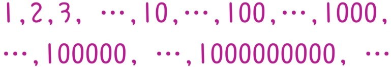
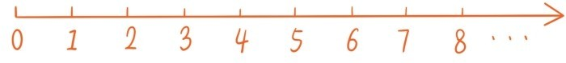

小学生学完最简单的自然数1，2，3…之后，很快就开始接触0这个数。0这个数是非常独特的，和1，2，3等自然数是截然不同的，0表示“空无”，表示什么都没有。好奇心强的孩子，在初次接触0这个数的时候可能会提这种问题：
问题3：0不是表示什么都没有吗，那为什么还会有个0？
这个问题确实指出了一个矛盾。之前学的自然数，比如3，是从3只动物，3个人，3棵树……这些现实物体中抽象出来的。作为数学符号，它代表的是实在的物体数量。但现在不但有数学符号表示“有”，还可以有数学符号表示“无”。所以0这个数代表着一种更高层次的抽象。如果说1，2，3等自然数概念有几百万年的历史，0这个数只有短短一千多年的历史。大约在公元9世纪，印度人开始把0当作一个数参与计算，这是数学史上开天辟地的大事。正是因为0这个数很独特，要不要把0归入自然数这个问题就一直有很大争议。现在教材已经统一把0归入自然数，这其实就是一种方便的规定而已。
今天，普遍使用的十进制计数方法也是主要依赖于0这个特殊数字的引入。这种计数方法的基本原则是逢十进一，原来的位数归0。例如59后面是60，199后面是200。十进制的便捷之处在于仅仅用10个符号0，1，2，3，4，5，6，7，8，9的组合就可以表示所有自然数。如果觉得10个符号还是太多你可能会问这种问题：
问题4：能否用5个符号，甚至2个符号的组合表示所有自然数？
当学到十位数，百位数，千位数，甚至更大的数字的时候，不少小学生就会发现，数可以一直增大下去，没有尽头，心中就开始渐渐萌发“无限”的模糊概念。

往这个方向可以提各种有趣的问题，比如
问题5：有没有一个数，比所有其他的数都大？
运用加法，小学生可以尝试给出这个问题的一个非常有趣的答案。
除了十进制计数方法外，还有一种非常形象的表示自然数的方法，那就是把所有自然数按大小顺序从左到右排在一条射线上，相邻两个数的间距都是1。我们把射线的起点，也就是0所在的位置称为原点，注意每个自然数到原点的距离恰好等于这个数本身。

和自然数是无穷无尽的一样，这条射线的另一端是没有尽头的，我们称这条射线为数轴。在这里，请牢牢记住一点：
“数轴这个概念和自然数概念一样，是整个数学大厦的根基！”